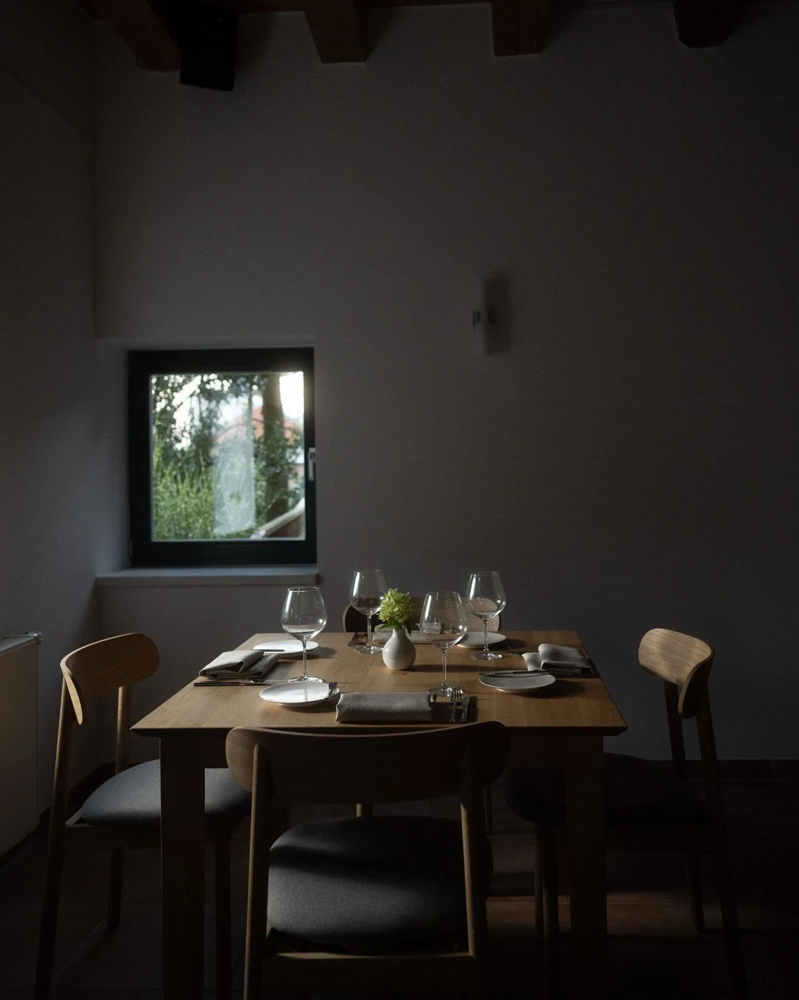
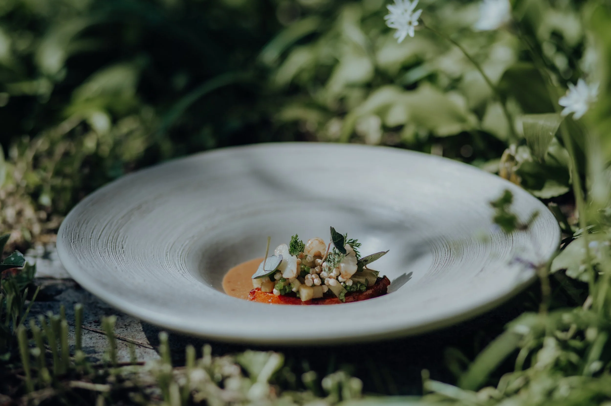
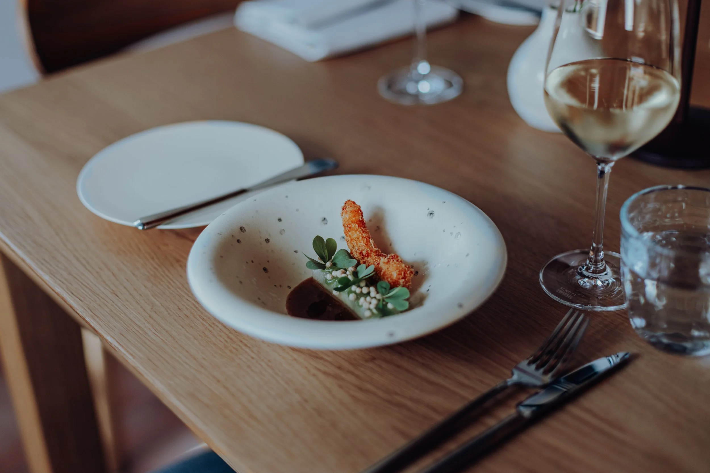
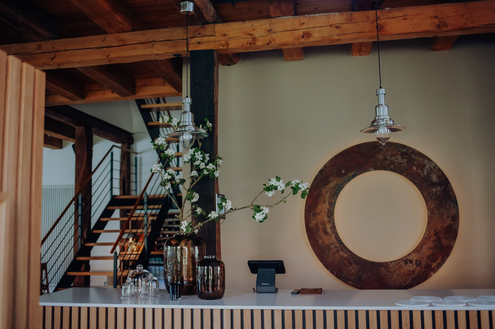
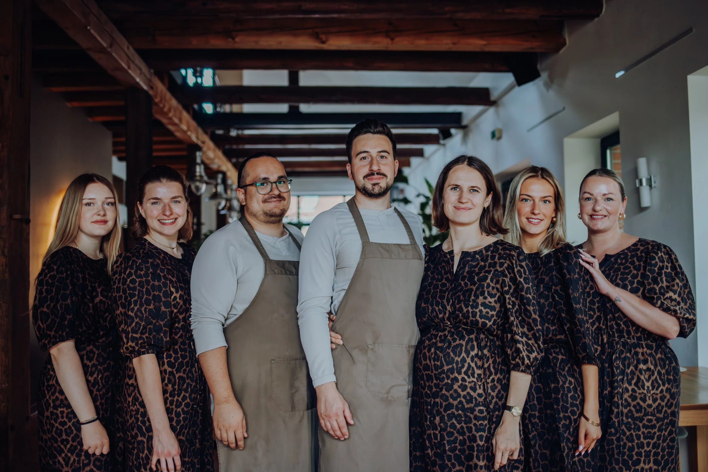
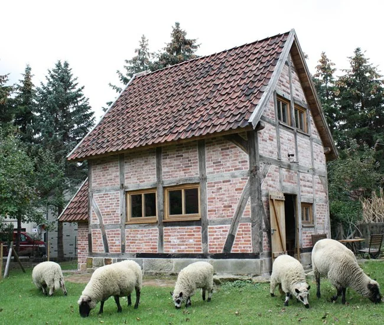
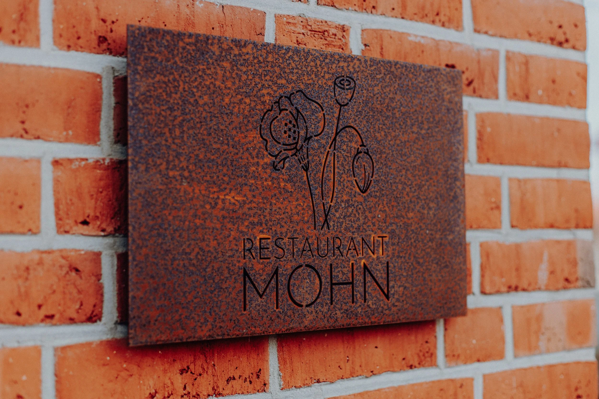
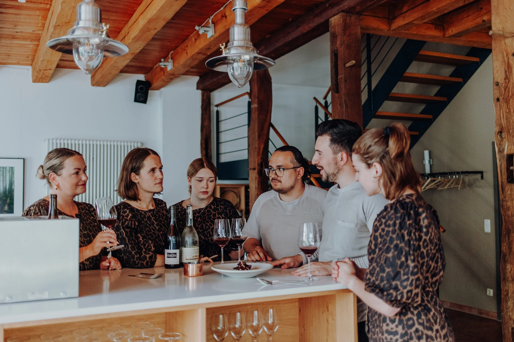

Eine abendfüllende kulinarische Reise, bei der Nachhaltigkeit und Genuss einander nicht ausschließen. Fine-Dining-Neulinge werden ebenso herzlich empfangen wie eingefleischte Gourmets.
Restaurant Mohn ist ein junges Fine-Dining-Restaurant in Hohnhorst — seit September 2024 nehmen wir unsere Gäste mit auf eine kulinarische Reise, bei der saisonale und regionale Zutaten im Mittelpunkt stehen. Gemüse spielt in beiden Menüs eine zentrale Rolle.
Anders als in vielen klassischen Gourmetrestaurants pflegen wir einen eher informellen, aber herzlichen und humorvollen Umgang zwischen unseren Gästen und dem kleinen Team.

Das Potential regionaler, saisonaler Zutaten steht im Zentrum jedes Gerichts.

Zur Einstimmung: kleine, präzise Gänge und selbst gebackenes Sauerteigbrot.

Atmosphärisches Licht sorgt für eine entspannte, gemütliche Stimmung. Bis zu 27 Gäste finden von Mittwoch- bis Samstagabend an den großzügig aufgestellten Tischen Platz zum Verweilen und Genießen.
Gastfreundschaft ist unsere wahre Leidenschaft — dafür steht das kleine Team von Restaurant Mohn jeden Abend gemeinsam ein.

Joris und Emiel (Chefkoch von Restaurant Joann) lernten sich als Kollegen im prestigeträchtigen La Rive in Amsterdam kennen. Bei diesem besonderen Abend "down the memory lane" zeigen beide Köche und ihre Teams Kreativität und Leidenschaft. Getränke sind begleitend zum Menü frei wählbar.
Four Hands Menü · 6 Gänge · 150 € · Anzahlung 75 € pro Person

Zimmer mit Bad für zwei Personen, im historischen Backhaus hinter dem Restaurant. Im Winter (ca. Nov.–Apr.) nicht buchbar, da das Wasser abgestellt wird.

Gemütliche Pension in 150 m Entfernung, mit Bad auf dem Gang.

Hell und wunderschön eingerichtete Apartments für zwei bis fünf Personen, 3 km Entfernung, ab 2 Nächten, buchbar über Mohn.
Traditionsreiches Hotel mit modernen Zimmern und Frühstücksbuffet, 4 km Entfernung. Alternativ: Steinhuder Ferienwohnung am Meer, 12 km Entfernung am Steinhuder Meer.
Mittwoch bis Samstag, 18:00–23:00 Uhr. Telefonisch erreichbar an den Öffnungstagen bereits ab 14:00 Uhr.
Auf dem Hof vor dem Hofladen sind ausreichend Parkplätze vorhanden. Hauptstraße 25, 31559 Hohnhorst.
Aus Rücksicht auf andere Gäste bitten wir Sie, Ihren Hund zuhause zu lassen.
Ob Fine-Dining-Neuling oder eingefleischter Gourmet — bei uns sind Sie herzlich willkommen.